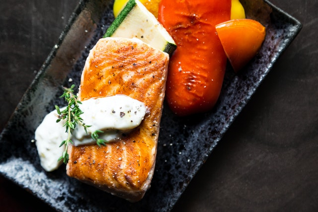

Soy Grilled Salmon

Soy sauce marinated grilled salmon
This is aa grilled salmon marinated in soy sauce adn lightly grilled to a
perfectly mild texture.
Ingredients
- 2 1 pound salmon filets
- 1/2 cup of soy sauce
- 1/3 cup brown sugar
- teaspoon garlic powder
- 1/2 cup vegetable oil
- 1/2 teaspoon lemon pepper
- 1/2 teaspoon seasalt
Steps
- Season salmon fillets with lemon pepper, garlic powder, and salt.
-
In a small bowl, stir together soy sauce, brown sugar, water, and
vegetable oil until sugar is dissolved. Place fish in a large resealable
plastic bag with the soy sauce mixture, seal, and turn to coat.
Refrigerate for at least 2 hours.
- Preheat grill for medium heat.
-
Lightly oil grill grate. Place salmon on the preheated grill, and
discard marinade. Cook salmon for 6 to 8 minutes per side, or until the
fish flakes easily with a fork.